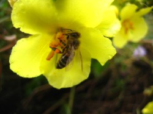

| |  |
HONIG Die positive Wirkung des Honig gerade bei Erkältungskrankheiten ist auch bei uns weitgehend bekannt. Das aber Honig auch eine antibakterielle und desinfizierende Wirkung bei äußerlicher Anwendung entfaltet, wussten auch schon die alten Ägypter, als sie Honig in den Balsam mischten, mit dem die Pharaonen mumifiziert wurden. Bei Wundbehandlungen mit Honig, besonders bei schweren Verbrennungen, wurden jetzt in Frankreich überraschende Erfolge erzielt, so daß dort nun großes Interesse für die Untersuchungen, die bereits in Osteuropa auf diesem Gebiet durchgeführt wurden, besteht. Ferner existieren zahlreiche Studien über die Behandlung von Krankheiten der Haut, des Nervensystems, des Herzens, des Verdauungssystems und der Nieren sowie über gute Erfolge bei Magen- und Zwölffingerdarmgeschwüren. Als Hausmittel ist er bewährt bei Fieber, Schlafstörungen, Zahnfleischentzündungen und Heuschnupfen. Die beste Methode ist es den Honig zwischen den Mahlzeiten zu nehmen, wobei es allerdings zu Übersäure im Magen kommen kann. Daher empfiehlt Dr. Stângaciu den Honig mit Tee(bis 40°C), am besten aus einer geeigneten Kräutermischung zu sich zu nehmen. Ferner hat man beobachtet, daß Honig ein sehr guter "Transporterstoff" für alle anderen Substanzen ist. Nimmt man beispielsweise eine Tablette zusammen mit Honig ein, so ist die Wirkung derselben wesentlich schneller als sonst zu beobachten. Aus diesem Grunde ist auch die Kombination von Erkältungstee mit Honig so erfolgreich. Honig ist ein hochwertiges Nahrungsmittel | Hilft gegen Entzündungen und beschleunigt die Wundheilung | Wirkt als Biostimulierungsmittel und unterstützt das vegetative Nervensystem | Führt dem Körper durch leicht resorbierbaren Trauben- und Fruchtzucker schnell Energie zu | Emulgiert Fette | Kräftigt den Herzmuskel | Entgiftet den Körper | Fördert die Verdauung | Hilft gegen Karies | Stärkt das Immunsystem und regt die Selbstheilungskräfte des Körpers an | Fördert den Aufbau der Körpersubstanzen | Fördert den Erneuerungsprozess der Haut, der Schleimhäute, der Zellwände und des Bindegewebes | Wirkt schleimlösend | Klärt biologisch Wein, Säfte und alle Most Arten | Wirkt als Antibiotikum antibakteriell und entzündungshemmend | Honig kann giftig sein, wenn die Bienen giftigen Nektar sammeln (nur bei größeren Mengen). |  Honigsorte | Anwendungen | Akazien
flüssig und mild | Gutes Süssmittel für Diabetiker vom Typ II. Verdauungsfördernd.
Bei Erkrankungen von Magen, Darm, Leber und Niere. | Buchweizen
dunkel und kräftig | Verdauungsfördernd, bei Schwangerschaft und beim Stillen. | Eukalyptus
dunkel und kräftig | bei Infektionen, Erkrankungen von Atemorganen und Harnwegen. Immuno-Stimulator. | Heide
dunkel und kräftig | kräftigend bei Müdigkeit und Rekonvaleszenz; bei Nieren- und Blasenproblemen. | Kastanien
dunkel und kräftig,
aromastark | kreislaufanregend; bei Anämie und gegen Entzündungen von Niere und Blase. | Klee
hell und mild | Beruhigend und entspannend. | Lavendel
hell und aromatisch | gut geeignet für die Behandlung von Wunden, Verbrennungen und Stichen; bei Infektionen der Atmungsorgane; bei Migräne und depressiven Zuständen. | Lindenblüte
kräftig und aromatisch | schweisstreibend, harntreibend, reizlindernd, appetitanregend: bei Erkältungen, Husten, Stirnhöhlenentzündung und Kopfschmerzen.
Bei Schlaflosigkeit und Angstzuständen. | Löwenzahn
goldgelb, kräftig und
aromatisch | blutreinigend, bei Magen-, Nieren-, Leber- und Gallenleiden;
bei Entzündungen von Niere und Blase. | Orangenblüte
hell und mild | bei Verdauungs- und Schlafstörungen. | Raps
hell und mild | beruhigend, ausgleichend und entspannend. | Rosmarin
hell und mild | bei Leber- und Kreislaufinsuffizienz; Bei Verdauungs-, Gallen- und Leberbeschwerden. | Sonnenblume
goldgelb, mild | spasmolytisch bei Asthma, bei Magen- und Darmkolik. | Tanne
dunkel und kräftig | bei Entzündungen der Atmungswege. | Thymian
dunkel und kräftig | bei Entzündungen der Atmungswege. | |
 |
|
| |